Partnerships
Our Premium Brands
Partnering with world leaders in sewing technology since 1970

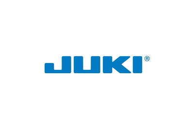
JUKI';">
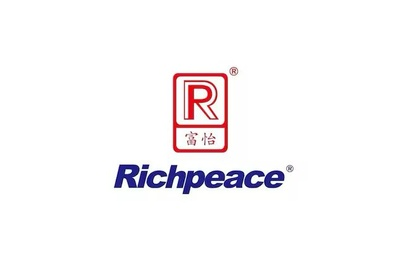
RICHPEACE';">
“Delivering Industrial Sewing Solutions Since 1994"
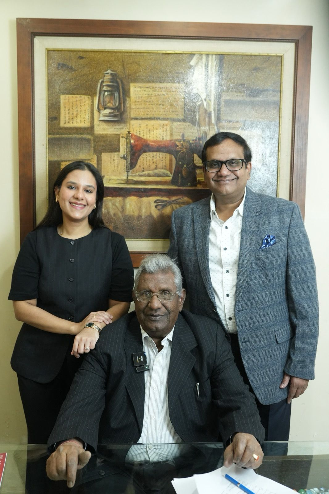
Founded in 1994, Sewing Machine Exchange India (SMX India) has established itself as a trusted name in the industrial sewing machinery industry. Led by Mr. Santosh Agarwal, who brings over 50 years of deep industry expertise, we are committed to delivering reliable machinery, technical excellence, and complete sewing solutions to manufacturers across India.
We are leading importers, exporters, and distributors of a wide range of industrial sewing machines, computerized embroidery systems, cutting and finishing equipment, quilting machines, and genuine spare parts. Our extensive product portfolio proudly caters to diverse industries including garments, knitwear, footwear, leather goods, jumbo bags, PPE kits, masks, and other industrial textile applications.
Backed by decades of experience, profound technical knowledge, and dependable customer support, we continue to provide efficient, high-performance sewing solutions tailored precisely to the evolving needs of modern manufacturing domains.
Trusted expertise in industrial sewing machinery since 1994.
Machines, automation, spare parts, and finishing equipment under one roof.
Quality machinery sourced from leading international manufacturers.
Industry knowledge backed by decades of hands-on experience.
Installation assistance, technical guidance, and spare parts support.
Serving garments, leather, footwear, PPE, and industrial textile sectors.
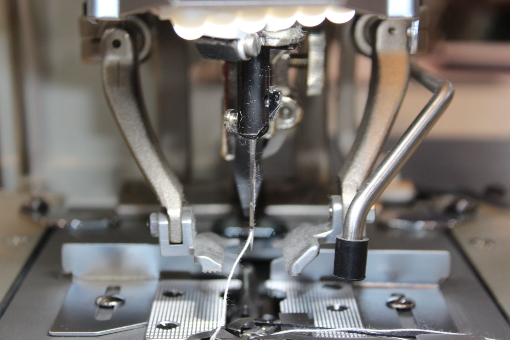
We understand your production needs and recommend the most suitable sewing solutions.
Our experts help select the right machines, attachments, and automation systems.
We source reliable machinery and components from trusted global manufacturers.
We provide installation, technical assistance, and genuine spare parts support.
Industrial sewing solutions for every production requirement
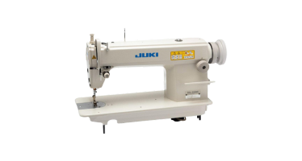
The most widely used machine in garment production, delivering a tight, secure stitch ideal for seaming all types of fabrics.
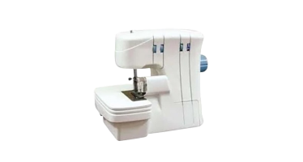
Trims, encloses, and stitches seam allowances simultaneously to prevent fraying — essential for knitwear and readymade garments.
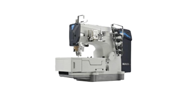
Produces flat, smooth seams with excellent stretch — widely used in sportswear, innerwear, and activewear manufacturing.
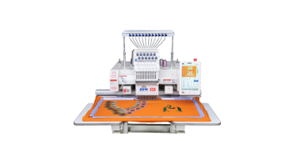
Multi-head computerised embroidery machines for logo, monogram, and decorative stitch patterns on garments and accessories.
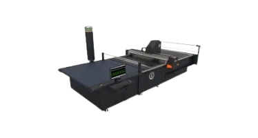
Precision automated fabric cutting systems with Richpeace technology — dramatically reducing fabric waste and cutting time.
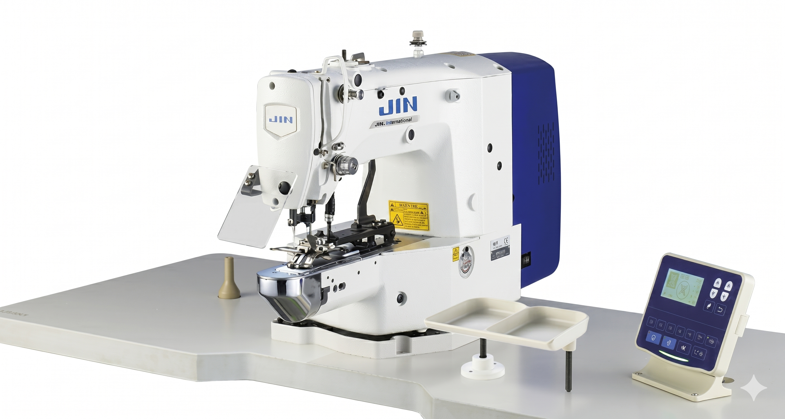
Automated button attaching and button-holing machines for shirts, trousers, and formal wear production lines.
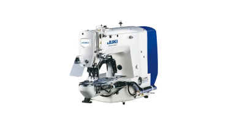
Reinforces stress points on garments such as belt loops, pocket corners, and zipper ends for extra durability.
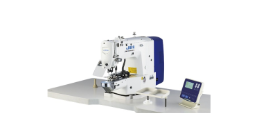
Single-needle chainstitch for denim, bags, and heavy fabrics — produces a durable, elastic seam loved in denim manufacturing.
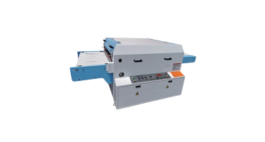
Bonds interlining to fabric using controlled heat and pressure — critical for formal shirts, suits, and structured garments.
The most widely used machine in garment production, delivering a tight, secure stitch ideal for seaming all types of fabrics.
Trims, encloses, and stitches seam allowances simultaneously — essential for knitwear and readymade garments.
Produces flat, smooth seams with excellent stretch — widely used in sportswear, innerwear, and activewear.
Single-needle chainstitch for denim, bags, and heavy fabrics — produces a durable, elastic seam.
Multi-head computerised embroidery machines for logo, monogram, and decorative stitch patterns.
Precision automated fabric cutting systems — dramatically reducing fabric waste and cutting time.
Automated button attaching and button-holing machines for shirts, trousers, and formal wear.
Reinforces stress points on garments such as belt loops, pocket corners, and zipper ends.
Bonds interlining to fabric using controlled heat and pressure — critical for formal shirts, suits, and structured garments.
Partnering with world leaders in sewing technology since 1970

JUKI';">

RICHPEACE';">